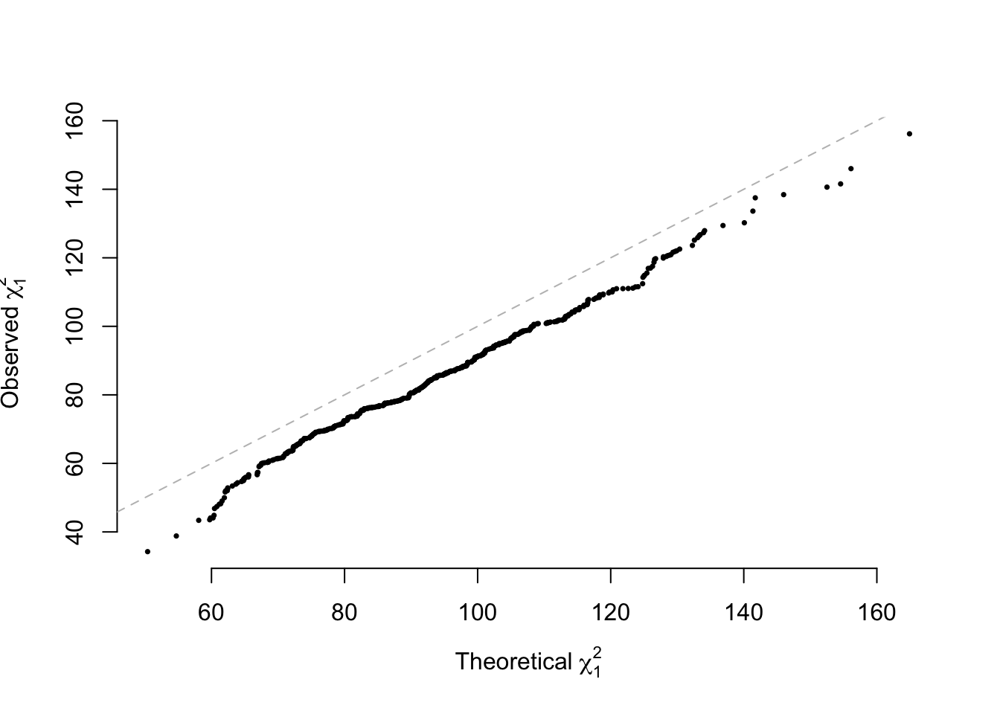

Chapter 6 Conclusion
6.1 Statistical power
The key parameters are below.
The validation for NCP for inbred populations \[n\omega_1\omega_2\frac{(p_1-p_2)^2}{p(1-p)}\] Simulation validation for NCP
RP=1000
n1=500
n2=500
N=n1+n2
f1=0.4
f2=0.6
paraA=matrix(0, RP, 1)
for(i in 1:RP) {
g1=rbinom(n1, 1, f1)*2
g2=rbinom(n2, 1, f2)*2
y=c(rep(1,n1), rep(0, n2))
ys=scale(y)
G=c(g1, g2)
Ga=c(g1, g2)
modA=lm(ys~Ga)
paraA[i,1]=summary(modA)$coefficients[2,3]^2
}
ncpA=N*n1/N*n2/N*(mean(g1)/2-mean(g2)/2)^2/(mean(Ga)/2*(1-mean(Ga)/2))
qqplot(main="", rchisq(RP,1, ncp = ncpA), paraA[,1], pch=16, cex=0.5, bty='n',
xlab=expression(paste("Theoretical ", chi[1]^2)), ylab=expression(paste("Observed ",chi[1]^2)))
abline(a=0, b=1, lty=2, col="grey")For random mating population, the NCP for the additive model is approximately \[4n\omega_1\omega_2\frac{(p_1-p_2)^2}{2p(1-p)}\] in which \(p=\omega_1p_1+\omega_2p_2\), and \(\omega_1=\frac{n_1}{n_1+n_2}\) and \(\omega_2=\frac{n_2}{n_1+n_2}\); for the dominance model is \[n\omega_1\omega_2\frac{[2p_1(1-p_1)-2p_2(1-p_2)]^2}{2p_1(1-p_1)\omega_1+2p_2(1-p_2)\omega_2}\] A shiny power calculator may be found here.
RP = 500
n1 = 500
n2 = 500
N = n1 + n2
f1 = 0.4
f2 = 0.6
para = matrix(0, RP, 6)
paraA = matrix(0, RP, 6)
for (i in 1:RP) {
g1 = rbinom(n1, 2, f1)
g2 = rbinom(n2, 2, f2)
y = c(rep(1, n1), rep(0, n2))
ys = scale(y)
G = c(g1, g2)
Gd = ifelse(G == 1, 1, 0)
Ga = c(g1, g2)
# Gd=scale(Gd)
mod = lm(ys ~ Gd)
Ecov = sqrt(n1/N * n2/N) * (length(which(g1 == 1))/n1 - length(which(g2 ==
1))/n2)
EV = mean(Gd) * (1 - mean(Gd))
Eb = Ecov/EV
b = mod$coefficients[2]
para[i, 1] = Eb
para[i, 2] = b
para[i, 3] = sqrt(1/(N * var(Gd)))
para[i, 4] = summary(mod)$coefficients[2, 2]
para[i, 5] = summary(mod)$coefficients[2, 3]^2
para[i, 6] = summary(mod)$coefficients[2, 4]
modA = lm(ys ~ Ga)
paraA[i, 5] = summary(modA)$coefficients[2, 3]^2
}
# layout(matrix(1:2, 1, 2)) vF2=f1*(1-f1)*n1/N+f2*(1-f2)*n2/N ncpD=n1*n2/N *
# (2*f1*(1-f1)-2*f2*(1-f2))^2/vF2 qqplot(main='Dom', rchisq(RP,1, ncp =
# ncpD), para[,5], pch=16, cex=0.5, bty='n',
# xlab=expression(paste('Theoretical ', chi[1]^2)),
# ylab=expression(paste('Obs ',chi[1]^2))) abline(a=0, b=1)
ncpA = 4 * N * n1/N * n2/N * (mean(g1)/2 - mean(g2)/2)^2/(2 * mean(Ga)/2 * (1 -
mean(Ga)/2))
qqplot(main = "", rchisq(RP, 1, ncp = ncpA), paraA[, 5], pch = 16, cex = 0.5,
bty = "n", xlab = expression(paste("Theoretical ", chi[1]^2)), ylab = expression(paste("Observed ",
chi[1]^2)))
abline(a = 0, b = 1, lty = 2, col = "grey")
m=1000000
alpha=0.05
pcut=alpha/m
chiT=qchisq(pcut, 1, lower.tail = F)
n=c(100, 200, 500, 1000, 1500, 2000,
5000, 7500, 10000, 15000, 20000, 50000)
PW=matrix(0, 2, length(n))
w1=0.3
w2=1-w1
p1=0.35
h1=2*p1*(1-p1)
p2=0.5
h2=2*p2*(1-p2)
p=w1*p1+w2*p2
H=w1*h1+w2*h2
for(i in 1:length(n)) {
ncpA=4*n[i]*w1*w2*(p1-p2)^2/(2*p*(1-p))
ncpD=n[i]*w1*w2*(h1-h2)^2/H
PW[1,i]=pchisq(chiT, 1, ncp=ncpA, lower.tail = F)
PW[2,i]=pchisq(chiT, 1, ncp=ncpD, lower.tail = F)
}
colnames(PW)=n
barplot(PW, beside = T, border = F)
abline(h=0.85, lty=2, col="grey")
legend("topleft", legend=c("Add", "Dom"), pch=15, col=c("black", "grey"), bty='n')